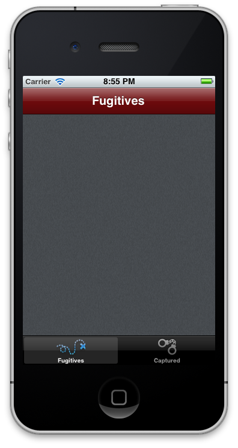

Lab - Cross-Platform Mobile Development
Mission: In this lab assignment, you will begin to create a cross-platform mobile application for Android and iPhone devices called TiBountyHunter. TiBountyHunter is derived from an example application developed in the iOS development primer Head First iPhone Development. The TiBountyHunter application enables bounty hunters to track a list of fugitives on their mobile device. In this lab, you will be asked to create and begin implementing this example application.
| 1. In Studio, create a new Titanium Mobile project. Name the app TiBountyHunter and give it an app ID of com.appcelerator.tibh. Uncheck the "Automatically cloud-enable this application" option. | |
| 2. Once the project has been created, close the tiapp.xml file. Delete the contents of app.js. | |
| You will write your own code that implements a CommonJS module pattern. | |
| 3. Write a self-calling function with an empty function body. | |
| You will enclose your code in a self-calling function so that you don't pollute the global scope. | |
| 4. Add an Ti.API.info logging message that outputs a message that includes the platform's name. | |
| 5. In the Resources directory, create a uifolder, which contains two folders: common and handheld. | |
| You will organize the files of your project in these folders. The 'handheld' folder will hold files for phone-size devices. While we won't create them in this course, presumably you'd have a 'tablet' folder within the ui folder and it would contain the tablet form-factor files. | |
| 6. In app.js, declare a variable named ApplicationTabGroup which will store the results of requiring the 'ui/common/ApplicationTabGroup' module. This module will create and return the tab group for your app. Create a new instance of ApplicationTabGroup and open it. Save and close the file. | |
| This is all you'll add to the app.js file. It simply bootstraps your application. | |
| Create the ApplicationTabGroup.js file and in it define a function to define a tab group, add two windows, and return the tab group. Tab 1 should be titled 'Fugitives' and tab 2 should be 'Captured' (make sure to use the internationalization file for these strings). Assign your function to the modules.export variable so that it can be used as a constructor. | |
| 8. You will need a new module, named Window, which will be form-factor specific. (So put it in the handheld directory.) In this file, write a module to create Ti.UI.Window objects for your app. Its constructor should accept a Boolean value, which will be used to specify whether the window is showing at-large vs. captured bounties. Set an appropriate internationalized title based on that Boolean value. | |
| 9. Bonus: If you have time, download graphic assets for this app from http://assets.appcelerator.com.s3.amazonaws.com/app_u/code/Lab215source.zip and set the app icon and splash screen, as well as icons for the tab buttons and the window background. For iOS, set the title bar color to #6d0a0c (a dark red). | |
| This step is optional. | |
| 10. Build your app for the iOS simulator or Android emulator. Correct any problems that exist. Build the app for Mobile Web (either in the browser or Android emulator). | |
| Consider the differences you see between the platforms. Be prepared to discuss these with your instructor and the class. | |
Summary
In this lab, you laid the foundation for the example app you'll build throughout the rest of this course. You implemented a basic CommonJS module structure. And, you compared the final result of this app across platforms.
Resources
- Localizing Strings: wiki.appcelerator.org/display/guides/Internationalizing+your+Application
- Titanium Window Reference: developer.appcelerator.com/apidoc/mobile/latest/Titanium.UI.Window-object
- CommonJS modules in Titanium: docs.appcelerator.com/titanium/2.0/index.html#!/guide/CommonJS_Modules_in_Titanium